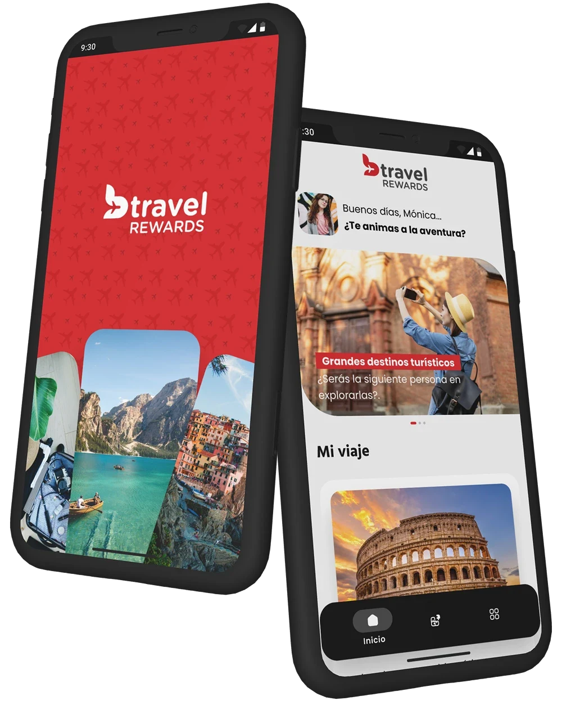
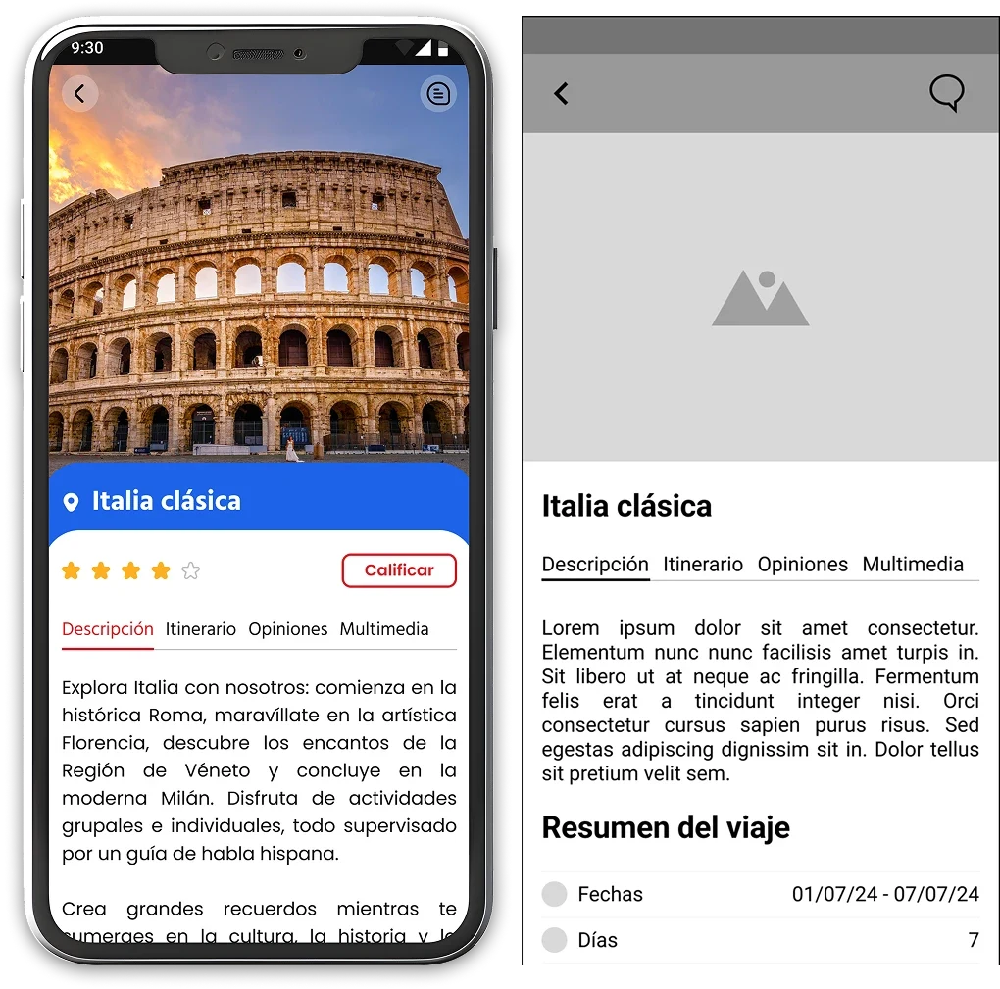
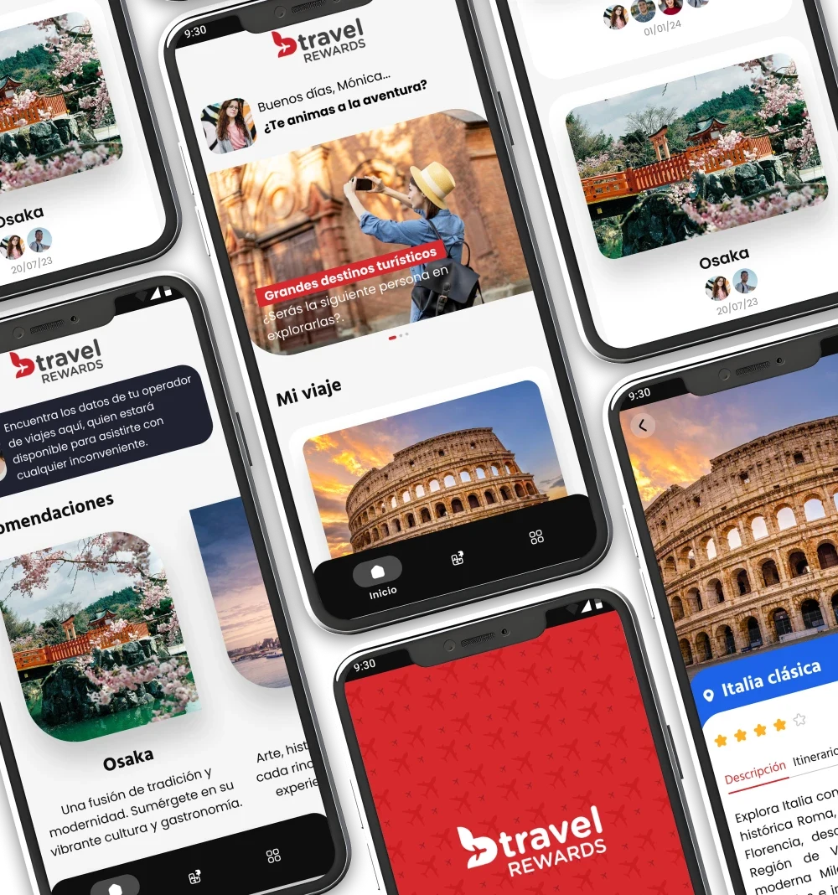

Btravel Rewards
Una experiencia de recompensas personalizada y motivadora: una app que simplifica la planificación y el disfrute de viajes de incentivo.

Btravel necesitaba que las empresas recompensaran a sus empleados con viajes. El reto: una app que no solo gestionara y entregara esos incentivos, sino que ofreciera una experiencia rica, con destinos, itinerarios personalizados, opiniones de otros viajeros y multimedia.
Un operador de viaje disponible en horario laboral para asistir durante el viaje.
Consultar el itinerario completo del viaje que se está realizando.
Guardar las fotos y videos de las personas que viajan.
Ofrecer actividades fuera del itinerario para vivir otras experiencias.
Elevar la productividad de los empleados y darles una forma de relajarse y motivarse.
Exploración de destinos, planificación de itinerarios y soporte en tiempo real, en una experiencia intuitiva y memorable.
Del insight
al prototipo
Empatizar
Entrevisté a 2 stakeholders y 6 usuarios: qué los motiva a alcanzar metas laborales, qué recompensas les atraen y qué información necesitan antes de aceptar un viaje.

Definir
Reuní todo lo recopilado en las entrevistas (motivaciones, recompensas deseadas e información indispensable para viajar) en un affinity map de éxitos, oportunidades y puntos de dolor. Los patrones fueron claros: todo el viaje en un solo lugar, soporte eficiente en tiempo real e itinerarios que se adapten a cada persona.
Poder ubicar fácilmente mi viaje y todo lo que contiene.
Affinity mapTener actividades extras fuera del itinerario.
Affinity mapConocer opiniones de otros viajeros.
Affinity mapEl soporte en tiempo real es visto como una gran ventaja.
Affinity mapCompartir la experiencia con otros miembros del equipo.
Affinity mapTener todo lo necesario en la app para realizar el viaje, como boletos de avión y hospedaje.
Affinity mapElegir los destinos de los viajes.
Affinity mapInscribirse desde la app en actividades que no estén en el itinerario.
Affinity mapInscribirse o participar en futuros viajes.
Affinity mapConocer los objetivos a cumplir para ganar los viajes.
Affinity mapLos empleados se frustran si el itinerario no se adapta a sus intereses.
Affinity mapEl soporte en tiempo real debe ser eficiente para evitar problemas durante el viaje.
Affinity mapLa sobrecarga de información podría desmotivar al explorar las opciones de viaje.
Affinity mapIdear
Mapa de sitio y wireframes de baja fidelidad: Inicio, Mi viaje (descripción, itinerario, opiniones y multimedia), operador de viaje, actividades y menú. Ajustes rápidos sin invertir aún en lo visual.

Prototipar
Wireframes de alta fidelidad con los colores de la marca Btravel y un prototipo en Figma para probar la fluidez de la navegación antes de desarrollar.

Poder ubicar fácilmente mi viaje y todo lo que contiene.
Affinity mapTener actividades extras fuera del itinerario.
Affinity mapConocer opiniones de otros viajeros.
Affinity mapEl soporte en tiempo real es visto como una gran ventaja.
Affinity mapCompartir la experiencia con otros miembros del equipo.
Affinity mapTener todo lo necesario en la app para realizar el viaje, como boletos de avión y hospedaje.
Affinity mapElegir los destinos de los viajes.
Affinity mapInscribirse desde la app en actividades que no estén en el itinerario.
Affinity mapInscribirse o participar en futuros viajes.
Affinity mapConocer los objetivos a cumplir para ganar los viajes.
Affinity mapLos empleados se frustran si el itinerario no se adapta a sus intereses.
Affinity mapEl soporte en tiempo real debe ser eficiente para evitar problemas durante el viaje.
Affinity mapLa sobrecarga de información podría desmotivar al explorar las opciones de viaje.
Affinity mapTestear
Testear nos permitió validar el diseño del producto con usuarios reales antes de su lanzamiento: 5 usuarios realizaron 5 tareas, desde consultar la información de su viaje hasta cargar archivos personales.
| Tarea asignada | Antonio38 años | Edgar32 años | Mónica42 años | Jessica27 años | Raúl30 años |
|---|---|---|---|---|---|
| Consultar la información del viaje | ✓ | ✓ | ✓ | ✓ | ✓ |
| Contactar al operador de viaje | ✕ | ✕ | ✓ | ✓ | ✓ |
| Actividades fuera del itinerario | ✓ | ✓ | ✓ | ✕ | ✓ |
| Buscar fotos en “Mi Galería” | ✓ | ✓ | ✓ | ✓ | ✓ |
| Cargar archivos personales | ✓ | ✕ | ✓ | ✓ | ✕ |
Una hoja de ruta clara para iterar
- Destinos e itinerarios claros: Los usuarios apreciaron la exploración de destinos y conocer su itinerario completo.
- Sentido de comunidad: Compartir fotos en “Mi Galería” generó entusiasmo entre los viajeros.
- Hoja de ruta: Se identificaron mejoras en la usabilidad y navegación, como dar más visibilidad al contacto con el operador.
proyectoPepsi te lleva al concierto→